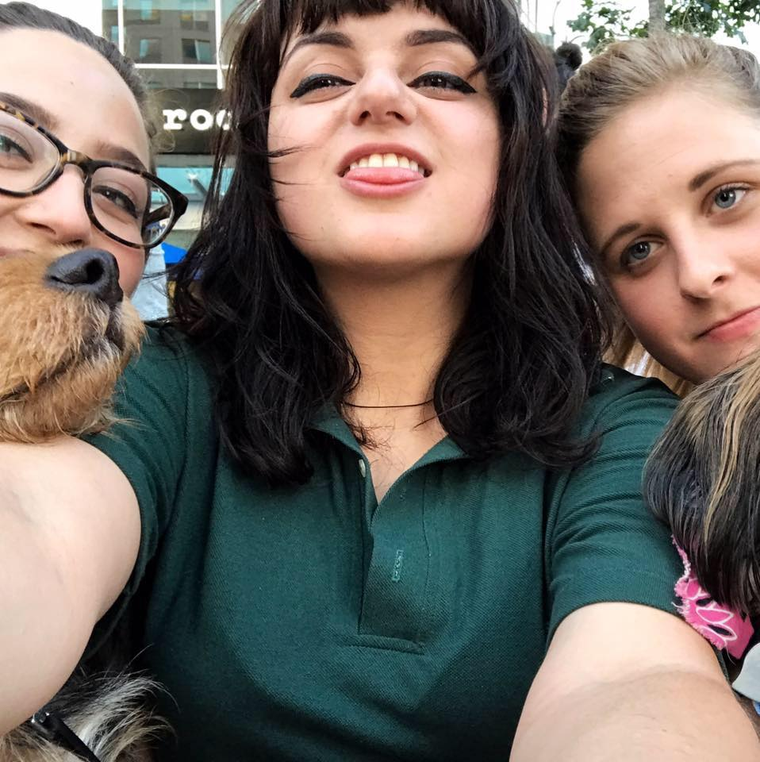

About Me
Thea Long is 100% a product of her upbringing. While growing up in Western NC, her family made it a priority to expose her to as much travel and culture as possible. Her father focused on music and cutting edge technology; her mother on sci-fi/fantasy literature and exploration. It was also encouraged she have a healthy love of gaming; many fond memories center around playing The Realm with her Poppy or trying to beat her dad’s imaginary records in Ocarina of Time. In middle and high school Thea dabbled with basic front-end web design (HTML, CSS, Adobe software), but shifted focus during college. After exploring several industries (music, fashion, esports) during and after school, Thea returned to coding, picking up where she left off. She lives in the Triangle area with her childhood best friend and their two beasts (Yoko, cat) (Gulliver, dog).
Connect with Me